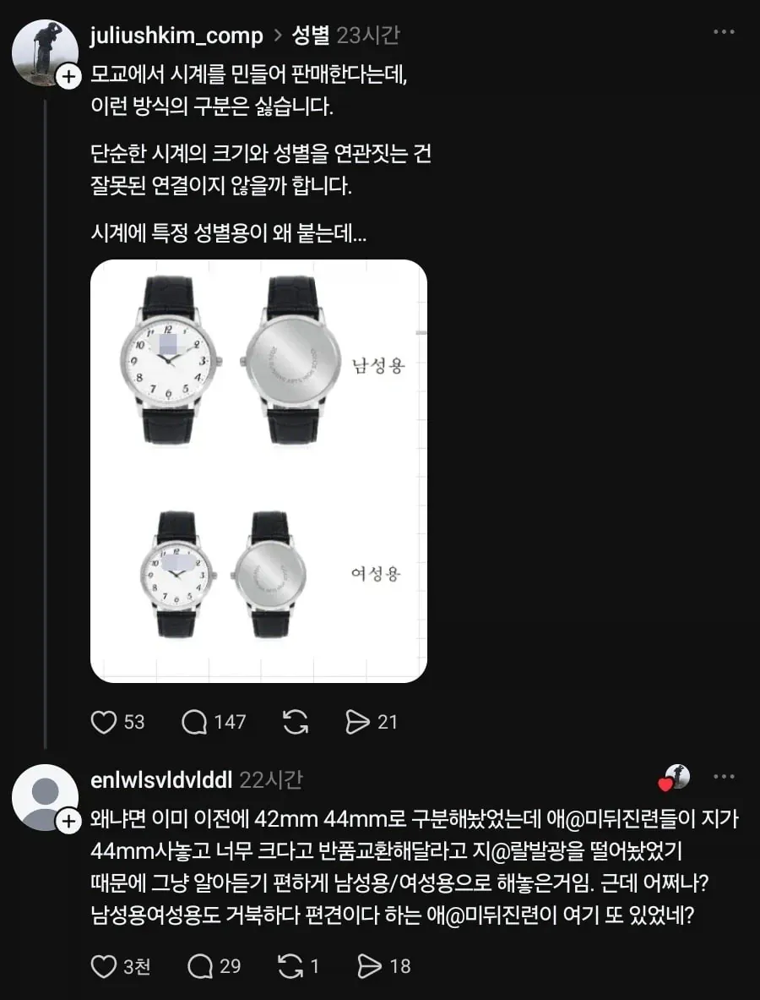

저렇게해야 빨리답변해줌
왜 나눠놨을까요?하면 그냥묻힘
근데 예시에 42mm도 여자가 쓰기엔 존나큰거잖아ㅋㅋㅋ
진짜 장사손목 아니면 다이얼 40mm도 쉽지않음 특히나 스마트워치는 다 크게나와서 아쉬움 비보액티브 40mm쓰고있는데 이정도 사이즈가 아니면 안되겠어서 아직까지 못바꾸는중
통짜라 애플워치 울트라 차도 남음 ㅜ
손목둘레 16.5인데 드레스워치 34mm찬다... 42mm다이버는 캡틴아메리카됨ㅋㅋ 차라리 통짜가 낫다!
다이버워치는 꽤 적당하게 맞고 38미리 필드워치는 여백이 꽤 보임 ㅋㅋ
부럽네 난 근데 또 다이버워치도 38mm정도부터는 베젤 비중 때문에 실제 다이얼은 너무 작은 느낌이라 뭔가뭔가임
레전드 다이버 논데이트 모델이 이너베젤에 사이즈까지 39mm로 딱인데 쉬바 내가 살 땐 42랑 36밖에 선택지가 없었어ㅠㅠ
다이버워치는 빵이 좀 있어야 밸런스 맞긴 함 ㅋㅋ
나도 손은 큰데 손목이 얇아서 드레스워치 차는데 ㅋㅋㅋ 근데 드레스워치 좋음 가볍고 편하고 데일리하게 착용가능하고
맞아 난 첨에 까르띠에 탱크머스트 사려고 공홈 맨날 들락거렸는데 매물도 안풀고 풀어도 금방 품절이라 짜증나서 동가격대 쿼츠시계 그랜드세이코로 샀는데
브랜드 괜찮고 논데이트 쿼츠라 관리 편한데다 작고 가벼워서 가격인상 전에 잘 샀다고 생각함
탱크 요즘 핫했지
ㅇㅇ 그랜드세이코 오래 착용할거면 좋은듯
난 그냥 세이코 쿼츠 차지만 ㅋㅋㅋ 합리적인 소비 했구만 굳굳
세이코 쿼츠야말로 근본중의 근본이지
ㅇㅈㅇㅈ 이쁜거 같음 스트랩이 좀 싸구려티 나서 oas으로 교체하니 이쁨 본체 자체가 퀄이 워낙 좋아서 가격대비
손목둘레 19cm라 맞는 시계가 읍따!
이게 손이야 장딴지야
그래서 갤워치3 45mm 차는데 시계가 작아서 불만
https://youtu.be/kVcPXzDAu2c?si=izzUgyBvxOtuwBfB
내가 그거 차면 이렇게 보이겠지...
남자와 여자는 다른 건데 왜 그걸 받아들이질 못하고 불편하기만 하냐!!!
난 소녀손목이라 40이 딱이야
42/40 둘다 남성용아닌가
38/36부터 남여공용으로 알고있는데
이유 듣고 납득까지 했는데 얘기 좀 했디고 부모 죽이네 ㄷㄷ
유희왕 듀얼디스크 차고다니는 느낌 낼려면 40mm 넘는거 사던가ㅋㅋㅋㅋㅋㅋ
나도 다이얼 돌아가는게 맘에 들어 갤워치 클래식(46mm)으로 샀는데 손목이 얇아 제대로 소화 못 함
40mm 이상이다? 남자여도 시착해보고 사는게 좋음
동일 기종 시착이 어려우면 크기 비슷한 것으로라도 시착해봐야함
큰 시계들은 두께도 상당한 경우가 많아 생각 이상으로 큼
손목에 비해 너무 큰 시계는 마치 에바 파일럿 슈츠에서 손목만 툭 튀어나온 그 느낌이라 보기에 좋진 않음
난 시착해보고 내 손목에는 너무 크다는거 알면서도 다이얼 돌아가는거에 눈이 돌아가서 샀기에 산 다음에도 별 생각 안 들었지만 만약 이 정도 크기인 줄 모르고 샀으면 후회하는 마음이 더 컸을 것 같음
인터넷으로 옷이랑 신발같은거 살때 사이즈 통일 좀 했으면 좋겠어. 회사마다 다 달라서 사이즈 표기가 있는데도 결국 리뷰 보고 사야함
근데 시계 살때 시착도 안함?
42밀리 다이버인데 방간보다 두께에 질리는중 ㅋㅋㅋ
돼지련이 지 손목이 빅팜인걸 탓해야지!
애미뒤진년들이 왜이렇게 많을까
이 글도 다시보니 44 42는 진상인데, 남성용 여성용에 대한 불편은 합리적이라고 생각함. 애초에 44 42로 해놓았는데 남성용 여성용으로 바꾼게 사실이라면 그게 병신이지.
반품고객의 90%가 44산 여성고객이라면 판매자는 저럴수밖에없음
구매자들이 단체로 병신이면 방법이없다
38 이상이면 남자도 손목 좀 두꺼워야 잘어울림
방간
ㅋㅋㅋㅋㅋㅋㅋㅋㅋㅋ
남자도 44가 작지는 않아..
나는 손목얇아서 PRX 35mm 차고다님 ㅋㅋ
딱맞아서 맘에듬
내 바쉐론아 오래가자~방간아~ㅠㅜ
오버시즈?
얍얍 예물로 샀슴당
어우 부자성님이시네
아네요 ㅠㅠ 초침이 섹시해서 이유로..
관심 많으신 만큼 님도 사실거 같은대 ㅎㅎ
기본 모델했어요 흑판, 와이프는 브레게
전 그냥 롤렉스만 파려고요 ㅋㅋ 그 이상 갈 사정은 못되는듯
요새 예약제 없어지고 오픈런 해야하는데, 원하는거 물어보곤 명함 있냐고 물어보더라구요
친구가 신강에서 헐크 샀는데~
다른 지점서 가지고 왔대요 ㅋㅋ
나 손목둘레 19cm 이상인데 36mm 참. 처음에는 작을까봐 고민 많았으나 전체의 조화를 봤을때는 오히려 41mm보다 나았음. 그런데 베젤이 있는 다이버워치 형태는 42mm까지는 괜찮은데 44mm는 아무리 생각해도 너무 클 것 같음. 더구나 드레스워치 스타일인데 44mm면 거의 접시 아닌가...
갤워치 40mm차는데 딱맞음
덩치큰친구는 44차는데 서로 이해못하는중 ㅋㅋ
문제 제기자도 어쩔 수 없이 납득하고 좋아요 누른게 킬포다 ㅋㅋㅋ